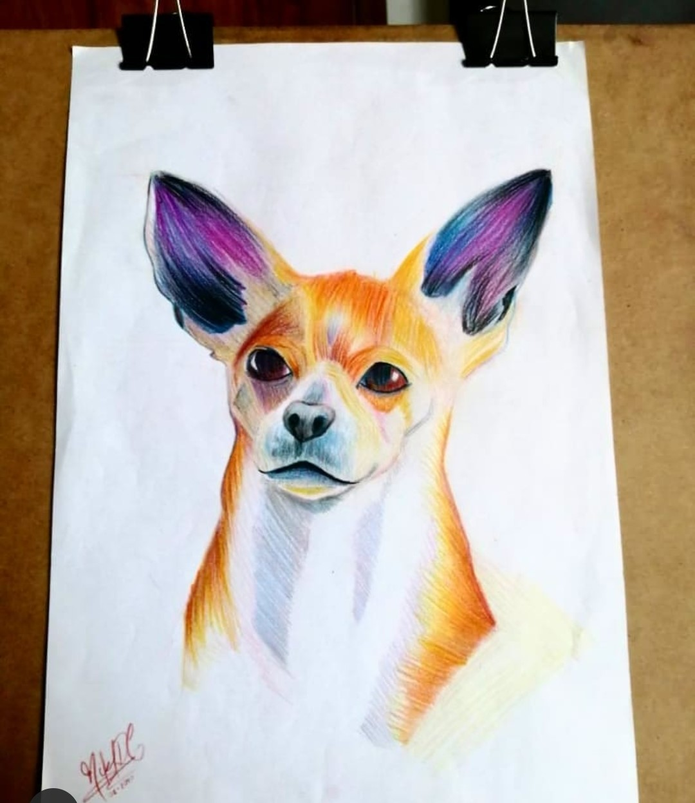
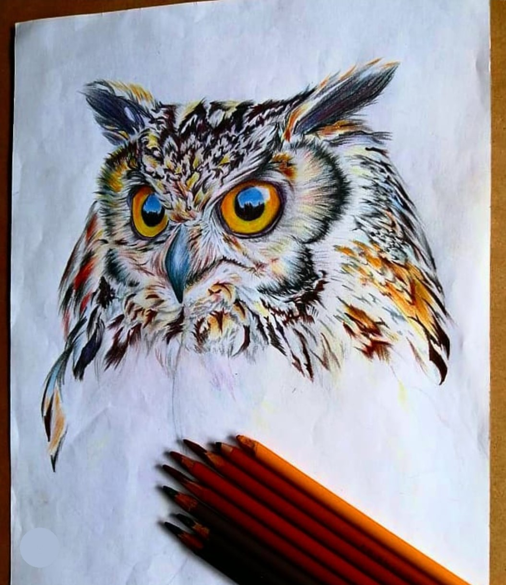
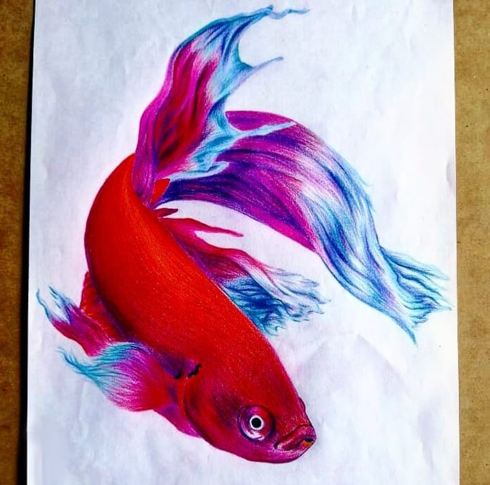
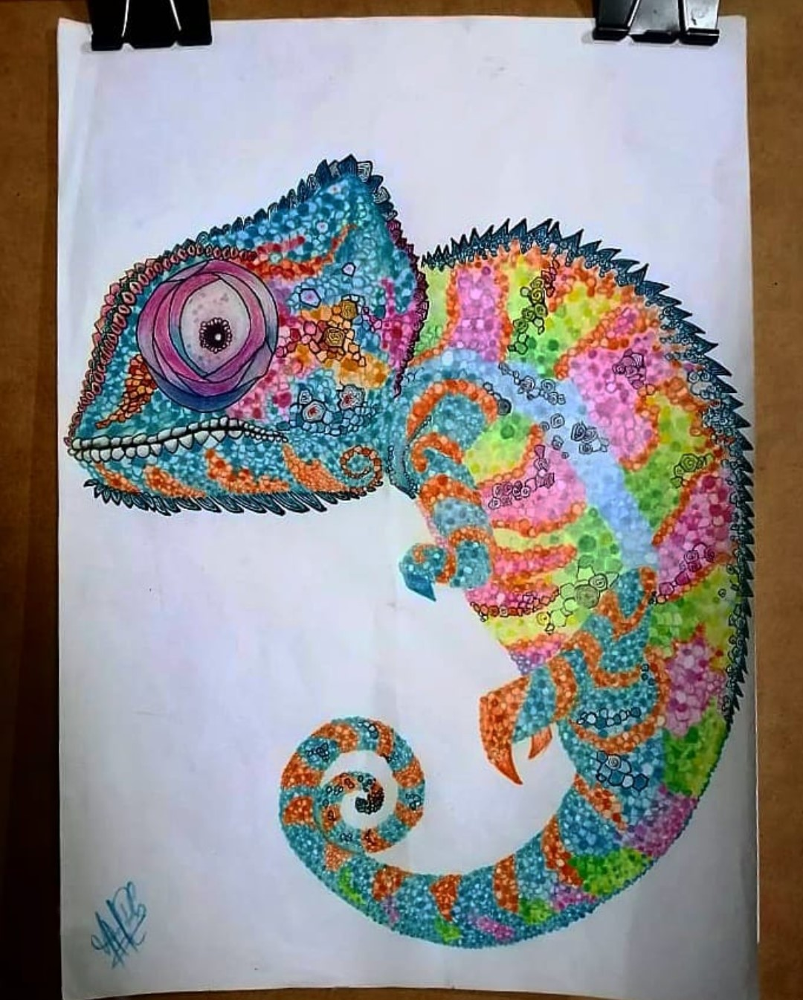
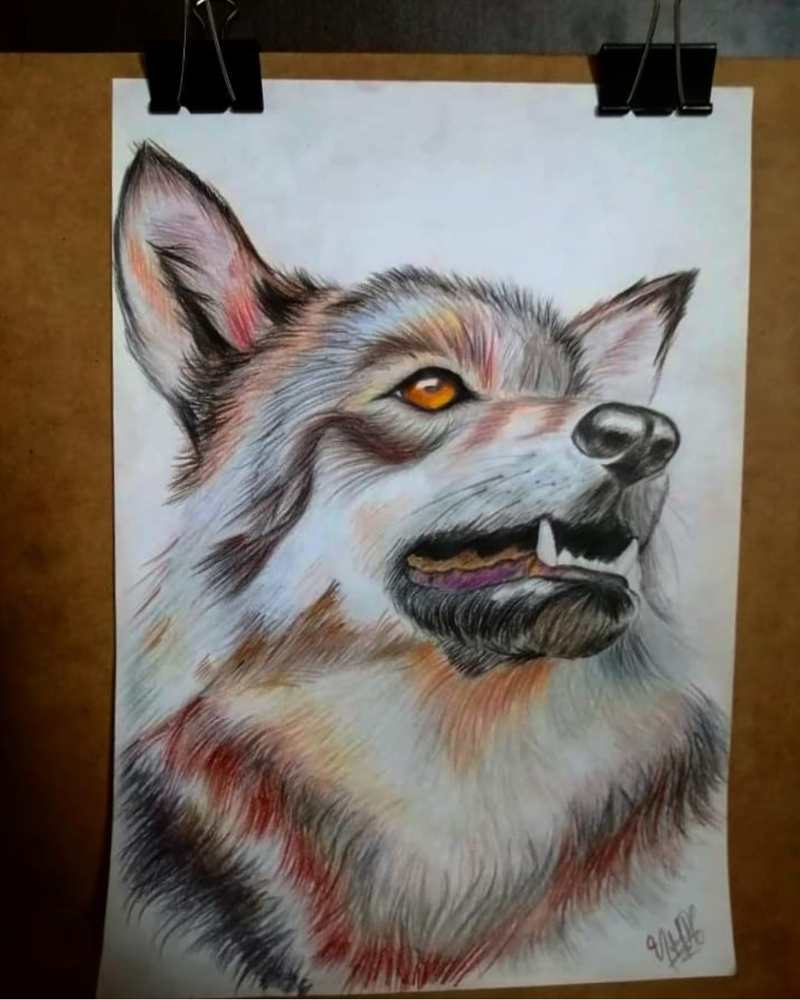

Il s'agit d'une technique sous-estimée car elle est généralement associée aux enfants. Cependant, ce que beaucoup de gens ignorent, c'est qu'elle nécessite une grande préparation.

Cette technique manipule comme les autres, l'utilisation de divers matériaux tels que des pinceaux pour estomper, des couleurs, du papier ou de la toile, de la térébenthine, et le plus important est le mélange de tous ces éléments.

Les couleurs peuvent être considérées comme une occasion d'utiliser les matériaux que nous avons à la maison pour essayer de transmettre quelque chose.

Dans ce cas, les dessins présentés ont été réalisés par l'artiste Nicol Rivera pour transmettre l'identité et le sentiment que des animaux spécifiques ont généré en lui.

Nous répétons encore une fois que le plus important n'est pas le produit final, l'important est de trouver les moyens de s'exprimer et de laisser les idées et la créativité circuler librement.
